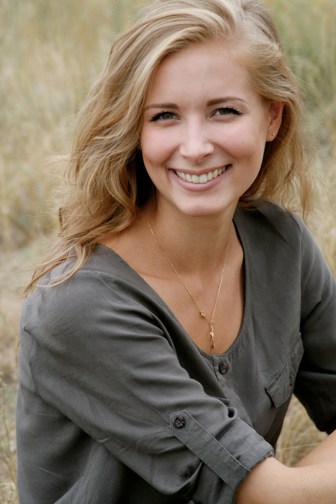

Daniela Paez

Jaime Miranda

Tiene 28 años, vive en La Plata, y tiene un conejo que se llama Tambor. Es ingeniero en sistemas de información, graduado de la Universidad Tecnológica Nacional y es el encargado del mantenimiento de nuestra página web y de nuestra app. Tiene una banda de rock/heavy metal con tres de sus mejores amigos de la infancia, que se llama Esmoquin Heads. En su tiempo libre gusta tocar la bateria, aprender a realizar tragos y hacer trucos de magia.
Mercedes Vera

Vive en Palermo con su hermana menor Angie y su perro Rocco, tiene 25 años. Es licenciada en comercialización (marketing) de la Universidad Argentina de la Empresa y actualmente está estudiando la maestría en comunicación audiovisual de la Universidad Católica Argentina. Es la community manager de la empresa. En su tiempo libre, disfruta de aprender a hablar en japonés, hacer yoga y maquillarse
Samuel Holgado

Nació y creció en Mar del Plata, pero en la actualidad vive en Pilar con sus padres y hermano mayor Felipe. Tiene 19 años, y está estudiando para contador publico en la Universidad de San Andrés. Es el administrativo contable de la empresa. Cuando tiene vacaciones, disfruta de ir a surfear en Mar del plata con su hermano y sus primos, le gusta jugar al fútbol con sus amigos y andar en patineta.
Regina Villena

Tiene 40 años y vive Avellaneda con su abuela Margarita. Se graduó de la Universidad Nacional de Avellaneda como Guía Universitaria en Turismo. Es la coordinadora principal y una de las guías acompañantes para los viajes grupales. Cuando tiene tiempo libre, le encanta cocinar y probar nuevas recetas, meditar, hacer bricolaje y salir con sus amigas.
Mateo Vergara

Nació y creció en Tandil, actualmente vive en Recoleta junto con dos amigos. Tiene 23 años y está terminando la licenciatura en Recursos Humanos de la universidad de Palermo. Es el encargado del departamento de Recursos Humanos. En su tiempo libre, disfruta de constuir maquetas, resolver rompecabezas, leer cómics y jugar videojuegos.
María Luz Lago

Vive en Ramos Mejía con sus padres Carmen y Paricio, tiene una perra que se llama Kiara, un gato que se llama Simba y un pez que se llama Nemo. Tiene 18 años, es estudiante de la carrera de Gestión de Servicios de Transporte Turístico de la Universidad de Morón. Junto con sus dos mejores amigas, tienen un grupo musical que se llama Crazy Girls donde hacen covers de canciones. En su tiempo libre, le gusta bailar, componer nuevas canciones y actuar.
Juan Ignacio Galán

Tiene 35 años, vive en Belgrano con su esposa Florencia, Maximiliano y Brisa, sus pequeños hijos. Es Abogado, recibido de la Universidad Católica Argentina con una maestría en Desarrollo y Gestión del Turismo. Es el encargado del departamento de legales dentro de la empresa. Cuando tiene tiempo libre disfruta aprender beatboxing, leer noticias del mundo, practicar boxeo y salir a tomar algo con sus amigos.
Eloísa Salcedo

Nació en España,pero hace 20 años se vino para Argentina. En la actualidad, vive con sus hijas Aylín y Estefanía en Adrogué. Tiene 28 años y es licenciada en turismo, graduada de la Universidad Nacional de Lanús. Es la encargada de la venta y atención al cliente. En su tiempo libre le gusta ver peliculas y series con sus hijas, le gusta aprender repostería, tejer, coser y pintar.
José Manuel Bermudez